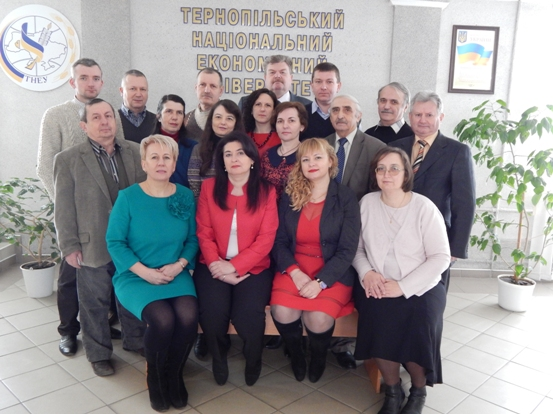

Про кафедру економічної кібернетики та інформатики
Кафедра

Кафедра економічної кібернетики та інформатики створенана виконання наказу №130 від 31 серпня 2010 р. шляхом приєднання кафедри АСП до кафедри економічної кібернетики та перейменуванням кафедри економічної кібернетики у кафедру економічної кібернетики та інформатики. Новоутворена кафедра продовжує традиції обох кафедр.
За період свого 20-річного існування кафедра підготувала більше 1316 фахівців з інформаційних технологій в галузі економіки, з них: 536 бакалаврів, 631 спеціаліст, 149 магістрів, багато з них стали керівниками структурних підрозділів і підприємств Тернопільщини. Серед випускників кафедри, які досягли значних наукових та творчих успіхів, можна назвати таких:Савчишин Сергій Володимирович (1999) - технічний директор ПП «MagneticOne», Савчишин Руслан Володимирович (2002) - директор «MagneticOne», Скорупський Вадим Васильович (1999) - Minneapolis MN USA директор CFO, Фаріончук Павло Володимирович (2002) - ведучий телеефіру каналу 24, Романець Ігор Євгенович (1997) – директор центру інформаційних технологій ТНЕУ.
Серед випускників кафедри є і кандидати наук: Василь Коваль, Людмила Барткова, Олег Адамів, Ірина Струбицька, Ірина Максимова, Андрій Пукас, Юрій Піговський, Андрій Мельник, Наталя Возна, Ігор Палій, Віталій Віцентій, Олександр Вовкодав, Сергій Співак.
Кафедра економічної кібернетики та інформатики є випусковою для спеціальності «Економічна кібернетика», а також забезпечує викладання циклу математичних дисциплін для інших спеціальностей факультету комп’ютерних інформаційних технологій, викладання курсу «Інформатика» для студентів усіх спеціальностей і форм навчання університету.
Підготовку спеціалістів здійснюють висококваліфіковані науковці і педагоги. Професорсько-викладацький склад кафедри нараховує 19 чоловік, з них: 2 доктори наук та 12 кандидатів наук.
За всю історію розвитку колектив кафедри вміло поєднав класичні академічні традиції освіти і новітні тенденції євроінтеграції навчального процесу; використання сучасних технологій навчання; індивідуальний підхід до кожного студента; реалізацію європейських норм і стандартів в освіті; адаптацію навчальних планів до вимог регіональної економіки; організаційно-методичне забезпечення кредитно-модульної системи організації навчального процесу; програми обміну та стажування студентів за кордоном; сприяння активному дозвіллю студентів.
Стратегією кафедри є пріоритетність питань якості підготовки фахівців, постійне підвищення їхньої конкурентоспроможності на ринку праці за рахунок нової методології цілеспрямування освітнього процесу до межі досконалості.
Головна мета кафедри – надання класичної університетської освіти бакалаврам і магістрам з економічної кібернетики для роботи у сферіорганізаційного управління та економіки, володіння сучасними математичними методами аналізу і прогнозування економічних ситуацій із використанням найновіших інформаційних технологій, а також управління економічними об’єктами в ринкових умовах, уміння організувати роботу з комп’ютеризації цих об’єктів, є спеціалістом в галузі економіки та управління виробничо-економічними системами.
Засобом реалізації поставлених завдань є: висококваліфікований викладацький персонал; сучасні методи навчання із використанням комп’ютерної та мультимедійної техніки; партнерські відносини із підприємствами, установами та організаціями різних форм власності; адаптивні до вимого зовнішнього середовища навчальні програми; зарубіжні програми стажування професорсько-викладацького складу та слухачів магістратури.
Кафедрою обладнано навчальну лабораторію, де здійснюється навчання студентів за допомогою комп’ютерної техніки з використанням передового програмного забезпечення. Всі навчальні місця студентів мають постійний доступ до Інтернет це дає змогу проводити навчання не ізольовано, а у інтегрованому інформаційно-освітньому середовищі.
Невід’ємною складовою діяльності кафедри є науково-дослідна робота, зміст якої визначається завданнями глибоких фундаментальних і прикладних досліджень. Науковими інтересами кафедри були і є прикладне програмування, обчислювальні методи і економіко–математичне моделювання, теорія диференціальних рівнянь і аналітична теорія гіллястих ланцюгових дробів, моделювання проблем електронного бізнесу і розподілені обчислення, математичне програмування і економіко-математичне моделювання соціально-економічних систем і процесів.Колектив кафедри бере активну участь у проведенні науково-дослідницьких робіт, пов’язаних з актуальними проблемами сучасності і залучає до цього докторантів, аспірантів та студентів ІV-V курсів.
На кафедрі регулярно проводяться засідання всеукраїнського наукового семінару “Математичні методи та прикладне програмування” під керівництвом професора Боднара Д.І. У його роботі беруть участь викладачі Тернопільського національного економічного університету, Тернопільського національного педагогічного університету, Львівського інституту прикладних проблем математики.
При кафедрі економічної кібернетики та інформатики функціонує науковий гурток «Кібернетікс», що займається дослідженням та специфікою діяльності економічних інформаційних систем. Керівником гуртка є Роман Мирославович Пасічник.
Колективом кафедри підготовлено і видано ціла низка посібників, сотні наукових праць, які використовуються у підготовці студентів не тільки в ТНЕУ , а й інших вузах країни і знані в широких колах науковців.
З 2010 навчального року кафедра стала базовою кафедрою партнерської програми ТНЕУ та компанії BaseGroup Labs – професійного постачальника програмних продуктів і рішень для бізнесу в галузі аналізу даних. Сертифікацію BaseGroup Labs на право використання у навчальному процесі аналітичної платформи Deductor® при підготовці економістів-кібернетиків успішно пройшов доцент нашої кафедри кандидат технічних наук Струбицький Павло Романович.
Кафедра підтримує активні зв'язки з провідними вузами України, науковими установами, підприємствами та організаціями. Співробітництво проводиться за багатьма напрямками: експертиза та рецензування дисертацій, наукових робіт, участь у конференціях та семінарах, обмін науково-педагогічним досвідом, стажування викладачів, участь у міжнародних проектах. Відповідно до договору про співпрацю продовжується співробітництво з науковцями Інституту механіки і прикладної інформатики Університету Казиміра Великого (м. Бидгощ, Польща), Міжнародним науково-навчальним центром інформаційних технологій та систем НАН України та МОН України, Інститутом прикладних проблем математики НАН України (м. Львів), кафедрою економічної кібернетики Рівненського державного гуманітарного університету, кафедрою економіко-математичного моделювання Чернівецького національного університету імені Юрія Федьковича, Міжнародним університетом “РЕГІ” (м. Рівне), кафедрою комп’ютерних наук Тернопільського державного технічного університету імені І. Пулюя.
Студенти кафедри є постійними учасники студентських наукових конференцій; учасниками і призерами Всеукраїнських студентських олімпіад, конкурсів студентських наукових робіт.
НАШІ ПЕРЕВАГИ:
- інтенсивне використання інформаційних технологій у навчальному процесі;
- застосування заочно-дистанційної та екстернатної форм навчання;
- прикладна спрямованість навчання;
- індивідуалізація навчального процесу;
- можливість поглиблювати та оновлювати знання, отримати в стислі терміни нову кваліфікацію та професію;
- орієнтація на ІТ технології - актуальні та перспективні сфери трудової діяльності згідно з попитом на ринку праці;
- закордонне стажування слухачів магістратури.
Для оптимізації практичної діяльності наша кафедра спільно з фірмою Soft Svit пропонує унікальну можливість підвищення кваліфікації для викладачів за «Програмою сертифікації і підвищення кваліфікації M.E.Doc.IS».
Тренінг-центр «M.E.Doc.IS», в межах якого студентам надається реальна можливість власноручного заповнення повного комплексу облікових і звітних документів будь-якого підприємства.За результатами навчання учасники програми отримують, сертифікат який надає право на придбання модулів комп’ютерної програми M.E.Doc.IS для компанії-роботодавця зі знижкою 50%.
ЗАПРОШУЄМО НА НАВЧАННЯ
за спеціальністю "Економіка", освітня програма «Економічна кібернетика» за освітнім ступенем «бакалавр» та освітньо-кваліфікаційного рівня "спеціаліст", освітня програма «Інформаційні технології в економіці» за освітнім ступенем «магістр».
У теперішній час у будь-якій сфері діяльності людини використовуються комп’ютери, без знань яких неможливо бути хорошим спеціалістом у сферах банківської системи, державного управління та ін. Саме тому застосування інформаційних технології в економіці є сьогодні найбільш прогресивною галуззю, що в найближчі роки суттєвим чином впливатиме на розвиток індустрії інформаційних технологій в Україні.
Фахівецьз економічної кібернетики –це бізнес-аналітик, який має високу кваліфікацію у сфері організаційного управління та економіки, володіє сучасними математичними методами аналізу і прогнозування економічних ситуацій, із використанням найновіших інформаційних технологій, а також управління економічними об’єктами в ринкових умовах, вміє організувати роботу з комп’ютеризації цих об’єктів, є спеціалістом в галузі економіки та управління виробничо-економічними системами. Володіє сучасними методами збору інформації, формування баз даних; аналізу і прогнозування економічних ситуацій з використанням сучасних математичних моделей та новітніх інформаційних технологій; управління економічними об’єктами в умовах невизначеності.
Навчання за даним напрямом передбачає оволодіння сучасними комп’ютерними інформаційними технологіями, навиками проектування інформаційних систем для бізнесу, програмування та використання інформаційних систем для вирішення економічних задач.
Програма підготовки економіста-аналітика базована на ідеї поєднання економічної підготовки з найбільш актуальними на сьогодні практичними навиками роботи з комп’ютерними інформаційними системами, що розвиває здібності до творчого засвоєння сучасних інформаційних технологій, аналізу і розв’язання економічних завдань з використанням сучасних комп’ютерних інформаційних засобів.
Фахівець здатен:
· будувати науково обґрунтовані прогнози розвитку економічних явищ;
· з'єднувати теорію і практику в прийнятті рішень на основі інформаційних технологій;
· виконувати аналітичну обробку інформації у сфері мікро- та макроекономіки, фінансово-кредитної, страхової, банківської і зовнішньоекономічної діяльності;
· ефективно розв'язувати проблеми управління на підприємствах, в галузях, регіонах; ефективно досліджувати ринкову кон'юнктуру;
· ефективно використовувати сучасні програмні продукти і комп'ютерну техніку у виробничій, науковій та освітній діяльності з використанням інформаційних технологій;
· створювати нові програмні продукти і здійснювати налагодження готових розробок;
· розробляти та впроваджувати інформаційні системи в галузі економіки, фінансів, бізнесу, маркетингу;
· створювати і використовувати статичні та динамічні експертні системи для оцінки бізнес-процесів;
· розробляти моделі економічних процесів і систем, використовувати їх з практичною і дослідницькою метою;
· проводити економічний аналіз об'єктів господарювання за допомогою ІТ-технологій;
· проводити наукову діяльність в галузі економіки.
Економіст-аналітик – це економіст нової формації, який може реалізувати себе в різних сферах діяльності.
Основними сферами діяльності випускників є:
· Стратегічне та оперативне планування діяльності підприємств.
· Аналіз та прогнозування соціально-економічних явищ та процесів.
· Формування завдань, аналітичних висновків і прогнозів ефективності діяльності підприємств.
· Оцінка економічного стану підприємств та прогнозування їх фінансової діяльності.
· Розробка програм оздоровлення та стратегій розвитку підприємств.
· Розробка методів аналізу фінансових та товарних ринків.
· Керівництво діяльністю підприємства, організації, установи.
· Постановка економічних задач та проведення з використанням економіко-математичного моделювання і комп’ютерних технологій експериментів з метою пошуку розв’язків цих задач.
· Побудова моделюючих систем для аналізу економічних процесів.
· Проведення системного аналізу об’єктів управління.
· Моделювання економічних ситуацій, процесів, задач.
· Розробка та впровадження інформаційних систем.
· Розробка систем проблемно-орієнтованого програмного забезпечення
Фахівці з економічної кібернетики є фахівцями широкого профілю. Їх призначення – виконувати аналітичні роботи в економічних, економіко-виробничих, фінансових системах, банківському і страховому бізнесі, а також в науково-дослідних і навчальних закладах, інформаційно-обчислювальних і аналітичних установах, органах управління економічною системою для розв'язання задач прогнозування, планування, бухгалтерського обліку, фінансів, комерції, маркетингу, менеджменту, статистики, демографії, соціології, розробки і експлуатації інформаційних систем управління і систем підтримки прийняття рішень, створення програмних продуктів, підготовки кадрів економістів тощо, направлених на вирішення соціально-економічних проблем, використовуючи інструментарій економіко - математичного моделювання і прогресивних комп'ютерних технологій.
Незважаючи на економічну кризу, попит на фахівців у галузі інформаційних технологій не знизився, а навпаки зріс. Про це засвідчують дані, наведені на сайті Асоціації ІТ-України. Середня заробітна плата фахівців в даній галузі складає понад 13 тис. грн. на місяць. Все це в Україні сприяє тенденції стійкого зростання попиту на фахівців в галузі інформаційних технологій.
Адреса:
навчальний корпусі №2 (другий поверх)
ауд. 2210
Внутрішній телефон: 12270
Сайт кафедри: http://eki.tneu.edu.ua